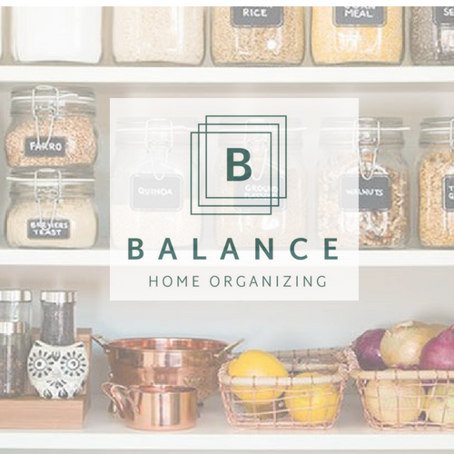

Who Do We Service?
At Balance Home Organizing, we are dedicated to serving a diverse range of clients within a residential home. We understand that each individual or family has unique needs, preferences, and organizational challenges, and our services are tailored to cater to those specific requirements.
Homeowners: We primarily serve homeowners who are looking to transform their living spaces into organized and functional environments. Whether they are seeking assistance with decluttering, optimizing storage, or enhancing the overall aesthetic appeal of their home, our professional organizers are adept at understanding and addressing the unique needs of homeowners.
Busy Professionals: We recognize that busy professionals often struggle to find the time and energy to maintain an organized home. Our home organizing services are designed to alleviate the stress and burden of organizing, allowing professionals to come home to a clutter-free and peaceful environment. We offer efficient solutions to streamline their belongings, implement effective storage systems, and create an organized space that supports their busy lifestyles.

Families: Families, especially those with children, often face unique organizational challenges due to the accumulation of toys, clothes, and various items. Our home organizing services are well-suited to assist families in establishing order and functionality within their homes. We provide practical solutions for organizing children's playrooms, bedrooms, and shared living spaces, ensuring that each family member has a designated place for their belongings.
Empty Nesters: Empty nesters who find themselves with extra space and a need for downsizing or reorganizing their homes can benefit greatly from our services. We work closely with empty nesters to declutter and repurpose rooms, optimizing the space to suit their evolving needs and lifestyle. Our team offer guidance on storage solutions, space utilization, and creating a comfortable and inviting living environment.
Seniors: As individuals age, organizing and maintaining a home can become increasingly challenging. Our home organizing services are particularly valuable for seniors who may require assistance in decluttering, downsizing, and creating a safe and accessible living environment. We work with seniors to tailor organizing solutions that meet their unique requirements, taking into consideration mobility, accessibility, and overall well-being.
Individuals in Transition: Whether someone is moving to a new home, combining households, or undergoing major life changes, our home organizing services are well-suited to facilitate smooth transitions. We help clients during these transitional periods by providing expert guidance in decluttering, packing, unpacking, and organizing their new space. Our professional organizers ensure a seamless and stress-free transition, allowing individuals to settle into their new homes quickly and efficiently.
Overall, our home organizing services cater to a wide range of clients within a residential home. We understand the diverse needs and challenges that individuals and families face when it comes to organizing their living spaces. By offering personalized solutions, expert guidance, and an understanding approach, we strive to create organized and harmonious environments that bring joy, efficiency, and peace of mind to our valued clients.
Learn about our process